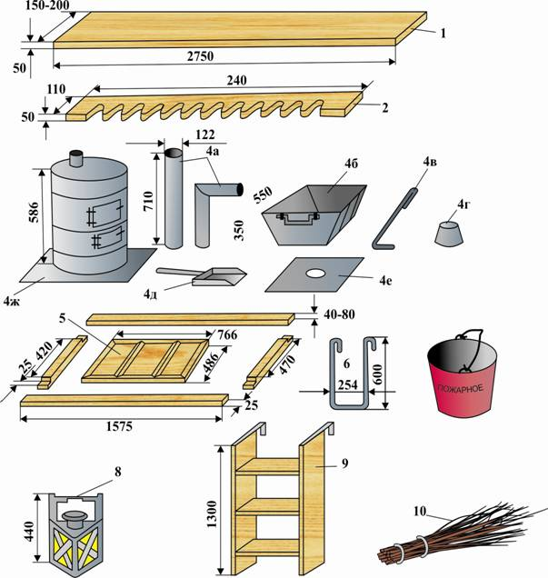

DEMIR ÝOL HEREKET EDÝÄN DÜZÜMINI TAÝÝARLAMAK
1. Ýapyk wagonlaryň aýrylýan harby enjamlarynyň bölekleri

1 – tagta; 2 – tüpeň çarhy; 3 – peç; 4 – peç we aşhana toplumlary (a) tüsse çykarýan turbalar; b) ýangyç üçin gapyrjak; ç) kesewi; d) aşhana demir konusy; e) susguç; ä) lýuky beklemek üçin demir list; f) pejiň aşagyna goýulýan demir list;); 5 – penjire çarçuwalary, polozlary bilen; 6 – stremýanka; 7 – ýangyn bedresi; 8 – aýnaly tüýnük; 9 – agaç merdiwan; 10 – sübse.
2. Aýrylýan harby enjamlaryň kadalary
3. Aýrylmaýan harby enjamlaryň bölekleriniň wagonlarda ýerleşdirilişi.

Surat. Ýapyk wagonlary aýrylmaýan harby enjamlar bilen enjamlaşdyrmak

4. Ýapyk ýük wagonlaryny adamlary daşamak üçin enjamlaşdyrmak
4.1 Umumy düzgünler
Harby eşelony daşamak üçin hereket edýän düzümini taýýarlamak demir ýol tarapyndan ýerine ýetirilýär we şu amallary öz içine alýar:
— gözden geçirmek we demir ýollary tehniki ulanmagyň Kadalarynyň talaplaryny kanagatlandyrýan wagonlary saýlap almak;
— wagonlary hapalardan, gardan, buzdan, öň daşalan ýükleriň, berkidiji serişdeleriň galyndylaryndan arassalamak, şeýle hem dahylsyz ýazgylary we suratlary aýyrmak;
— adamlar üçin wagonlary, wagon-izolýatorlary, wagon-aşhanalary we wagon – azyk ammarlaryny gyzgyn suw bilen ýuwmak we dezinfeksiýa etmek, olary guratmak, aýrylýan harby enjamlary gurnamak;
— adamlar üçin wagonlarda, wagon-izolýatorlarda, wagon-aşhanalarda we wagon – azyk ammarlarynda ýokarky ýük ýüklenýän lýuklary doly ýa-da bölekleýin ýapmak we berkitmek.
Gaýtadan ýüklenende, eger bu zerur bolsa, adamlar üçin wagonlar, wagon-izolýatorlar, wagon-aşhanalar we wagon – azyk ammarlary mundan başga-da gyzgyn suw bilen ýuwulýar.
4.2 Ýapyk wagonlary şahsy düzümi daşamak üçin enjamlaşdyrmak
Adamlary daşamak üçin ýapyk ýük wagonlary enjamlaşdyrylanda gije gatnamak üçin ýatym tagtalaryny gurmak şu tertipde geçirilýär:
wagonyň her bir ýarymynda öň diwarlaryň ýanyndaky tagtalar wagona kese, diwar tagtalarynyň üstüne üç gatda şu mukdarda düşelýär:
— her bir aşaky ýatym tagtasynda – 10 tagta;
— her bir ortaky ýatym tagtasynda – 9 tagta;
— her bir ýokarky ýatym tagtasynda – 8 tagta.
Gapy sütünleriniň we penjire çarçuwasynyň arasynda ýerleşýän ýokarky diwar tagtalarynyň üstüne wagonyň her bir ýarymynda 9 tagtadan ybarat bir ýatym tagtasy düşelýär, olaryň biri penjire çarçuwasynyň tarapyndan gyrasyna dikligine goýlup, baş ýassygy üçin hyzmat edýär.
Kese diwarlaryň ýanynda ýerleşýän ortaky we ýokarky ýatym tagtalaryna çykmak aşaky ýatym tagtalarynyň çetki tagtalary boýunça amala aşyrylýar. Wagonyň ortaky böleginde ýokarky ýatym tagtalaryna çykmak üçin gapy sütünleriniň ýanyndaky öýjüklere direg tagtasy salynýar, oňa merdiwan direlýär.
Tüpeň çarhlary wagonyň gapdal diwarlarynda gapy aralyklarynyň golaýynda ýörite kronşteýnlerde gurnalýar we her birine bir tagta salynýar.
Wagonlarda peçler şeýle gurnalýar welin, wagonyň diwarlarynyň, ýatym tagtasynyň çetki tagtasynyň we pejiň arasyndaky aralyk azyndan 1000 mm bolmalydyr. Pejiň düşekde gurnalýan ýeri galyňlygy 10 mm bolan asbest listiň üstünden üçek polady bilen izolirlenýär. Düşegiň izolýasiýasy ot ýakylýan agzyň öňünde pejiň gabaralaryndan 500 mm çykyp durmalydyr.
Tüsse çykarýan turbalar wagonyň görnüşine baglylykda 4 ýa-da 4,5 bölekden ybarat bogunlar bilen, tüssäniň ugry boýunça biri-birine birleşdirilip gurnalýar hem-de wagonyň lýugyna ýa-da wagonyň üçegindäki hemişelik nusgalyk taýýarlanan ýerleriň üsti bilen çykarylýar we wagonyň üçeginde galpaklar bilen tamamlanýar.
Penjire çarçuwalary wagonda polozlaryň üstünde gurnalýar we wagonlaryň lýuklaryna berkidilýär. Daşalýan adamlaryň münmegi we düşmegi üçin süýşürilip çykarylýan merdiwanlar bilen enjamlaşdyrylmadyk wagonlara stremýankalar berilýär. Wagonlary içinden ýagtylandyrmak üçin ulanylýan aýnaly tüýnükler wagonlaryň diwarlarynda gapynyň ýokarsyndaky we her tarapyň gapdallaryndaky çeňňeklere asylýar.

Surat. Şahsy düzümi daşamak üçin ýapyk wagonlary aýrylýan harby enjamlar bilen enjamlaşdyrmak (gyş görnüşi)

4.3 Ýapyk wagonlary meýdan aşhanalaryny daşamak üçin enjamlaşdyrmak
Meýdan aşhanalary üçin ýapyk wagonlar harby eşelonyň daşalyşynyň dowamlylygy bir gije-gündizden köp bolan ýagdaýynda berilýär. Eger harby eşelonyň azyk önümleriniň agramy 2 tonnadan geçmese, onda aýratyn wagon berilmeýär; bu halatda azyk önümleri wagon-aşhanada ýa-da beýleki wagonlarda daşalýar.
Wagonlarda peçler şeýle gurnalýar welin, wagonyň diwarlarynyň, ýatym tagtasynyň çetki tagtasynyň we pejiň arasyndaky aralyk azyndan 1000 mm bolmalydyr. Pejiň düşekde gurnalýan ýeri galyňlygy 10 mm bolan asbest listiň üstünden üçek polady bilen izolirlenýär. Düşegiň izolýasiýasy ot ýakylýan agzyň öňünde pejiň gabaralaryndan 500 mm çykyp durmalydyr.
Tüsse çykarýan turbalar wagonyň görnüşine baglylykda 4 ýa-da 4,5 bölekden ybarat bogunlar bilen, tüssäniň ugry boýunça biri-birine birleşdirilip gurnalýar hem-de wagonyň lýugyna ýa-da wagonyň üçegindäki hemişelik nusgalyk taýýarlanan ýerleriň üsti bilen çykarylýar we wagonyň üçeginde galpaklar bilen tamamlanýar.
Penjire çarçuwalary wagonda polozlaryň üstünde gurnalýar we wagonlaryň lýuklaryna berkidilýär. Daşalýan adamlaryň münmegi we düşmegi üçin süýşürilip çykarylýan merdiwanlar bilen enjamlaşdyrylmadyk wagonlara stremýankalar berilýär. Wagonlary içinden ýagtylandyrmak üçin ulanylýan aýnaly tüýnükler wagonlaryň diwarlarynda gapynyň ýokarsyndaky we her tarapyň gapdallaryndaky çeňňeklere asylýar.
Surat. Meýdan aşhanalaryny daşamak üçin ýapyk wagonlary aýrylýan harby enjamlar bilen enjamlaşdyrmak

4.4 Ýapyk wagonlary wagon-izolýator hökmünde enjamlaşdyrmak
Harby eşelon demir ýol ulagynda üç gije-gündizden köp daşalanda, şeýle hem onuň düzüminde 10 we ondan köp adamlar üçin wagon bolanda otlynyň düzümine wagon-izolýator goşulýar, ol aýrylýan harby enjamlar bilen üpjün edilýär.
Demir ýol ulagynda daşamagyň dowamlylygy üç gije-gündizden az bolanda we otluda 10-dan az adamlar üçin wagon bolanda eşelonyň başlygynyň buýrugy bilen ýolagçy wagonynda kupe-izolýator bölünip berlip bilner.
Wagonlarda peçler şeýle gurnalýar welin, wagonyň diwarlarynyň, ýatym tagtasynyň çetki tagtasynyň we pejiň arasyndaky aralyk azyndan 1000 mm bolmalydyr. Pejiň düşekde gurnalýan ýeri galyňlygy 10 mm bolan asbest listiň üstünden üçek polady bilen izolirlenýär. Düşegiň izolýasiýasy ot ýakylýan agzyň öňünde pejiň gabaralaryndan 500 mm çykyp durmalydyr.
Tüsse çykarýan turbalar wagonyň görnüşine baglylykda 4 ýa-da 4,5 bölekden ybarat bogunlar bilen, tüssäniň ugry boýunça biri-birine birleşdirilip gurnalýar hem-de wagonyň lýugyna ýa-da wagonyň üçegindäki hemişelik nusgalyk taýýarlanan ýerleriň üsti bilen çykarylýar we wagonyň üçeginde galpaklar bilen tamamlanýar.
Penjire çarçuwalary wagonda polozlaryň üstünde gurnalýar we wagonlaryň lýuklaryna berkidilýär. Daşalýan adamlaryň münmegi we düşmegi üçin süýşürilip çykarylýan merdiwanlar bilen enjamlaşdyrylmadyk wagonlara stremýankalar berilýär. Wagonlary içinden ýagtylandyrmak üçin ulanylýan aýnaly tüýnükler wagonlaryň diwarlarynda gapynyň ýokarsyndaky we her tarapyň gapdallaryndaky çeňňeklere asylýar.

Surat. Ýapyk wagonlary wagon-izolýator hökmünde aýrylýan harby enjamlar bilen enjamlaşdyrmak